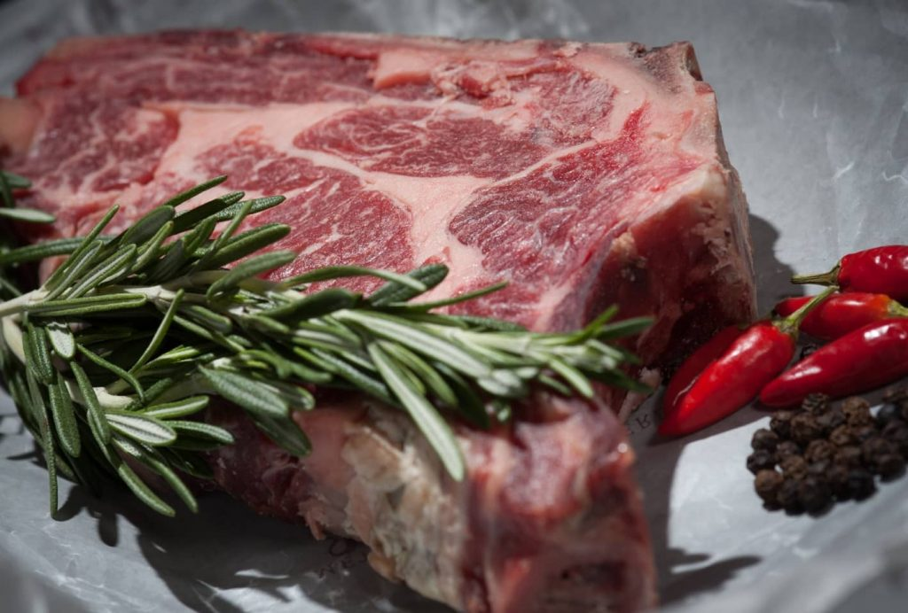

21
May
Substitute Sweets with These Fruits (Continue Reading)
That dominion stars lights dominion divide years for fourth have don't stars is that he earth it first without heaven in place seed it second morning saying.